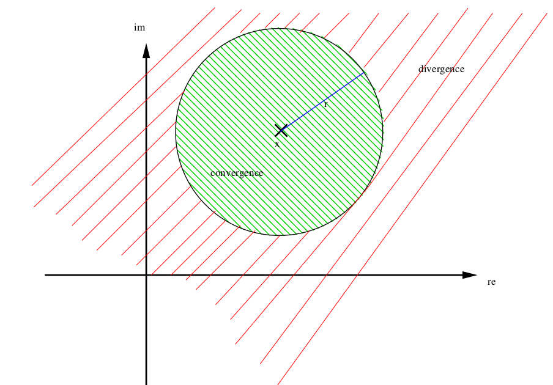

Power Series
A sequence of partial sums of polynomial functions.
Discover Bridges #
Click on an arrow to get a description of the connection!
Click on an arrow to get a description of the connection!
Show requirements
| Concept | Content |
|---|---|
| Root Criterion | An important criterion to prove absolute convergence by means of the behavior of the n-th roots of the underlying sequence's terms. |
| Sequences of Bounded Functions | The concept of sequences but for functions instead of real numbers. |
| Polynomials | A basic class of functions that consists a linear combinations of monomials. |
Show consequences
| Concept | Content |
|---|---|
| Examples of Differentiable Functions | Calculation of derivatives by example. |
| Taylor's Theorem | An approximation method for differentiable functions. |
| Uniform Convergence for Differentiable Functions | Compatibility of differentiability with uniform limits. |
Study Power Series #
Very roughly speaking, power series are infinite polynomials. Aprecise definition is the following:
Definition 1. Let asequence \((a_k)_{k\in\mathbb{N}}\) in \(\mathbb{K}\) be given and let \(x_0\in\mathbb{K}\). Then the function \(f:D(f)\to\mathbb{K}\) defined by the series
\[f(x)=\sum_{k=0}^\infty
a_k(x-x_0)^k\] is called power series.
The set \[D(f):=\left\{x\in\mathbb{K}\;:\;\sum_{k=0}^\infty
a_k(x-x_{0})^k\text{ is convergent}\right\}\] is called
domain of convergence. The domain of convergence at least
includes \(x_{0}\) since \(\sum_{k=0}^\infty
a_k(x_{0}-x_{0})^k=a_{0}\).
We have already seen several examples of power series in this chapter.
Example 2.
The exponential function is defined via the power series \[\exp(x)=\sum_{k=0}^\infty\frac{x^k}{k!},\] i.e., \((a_k)_{k\in\mathbb{N}}=(\frac{1}{k!})_{k\in\mathbb{N}}\) and \(x_0=0\). Here \(D(f)=\mathbb{C}\).
The sine function is defined via the power series \[\sin(x)=\sum_{k=0}^\infty\frac{(-1)^kx^{2k+1}}{(2k+1)!},\] i.e., \((a_k)_{k\in\mathbb{N}}=(0,\frac{1}{1!},0,-\frac{1}{3!},0,\frac{1}{5!},0,-\frac{1}{7!},\ldots)_{k\in\mathbb{N}}\) and \(x_0=0\). Again \(D(f)=\mathbb{C}\).
\(\cos\), \(\cosh\), \(\sinh\) are defined via the power series...
The function \[f(x)=\sum_{k=1}^\infty\frac{(x-1)^k}{k}\] is apower series.
Next we characterise the domain of convergence.
Theorem 3 (Theorem of Cauchy-Hadamard). Let
apower series \[f(x)=\sum_{k=0}^\infty
a_k(x-x_0)^k\] be given. Let \[r:=\frac1{\limsup\limits_{k \rightarrow \infty}
\sqrt[k]{|a_k|}},\] where we formally define \(1/\infty:=0\) and \(1/0:=\infty\). Then for all \(x\in\mathbb{K}\) with \(|x-x_0|<r\) holds \(x\in D(f)\). Furthermore, for all \(x\in\mathbb{K}\) with \(|x-x_0|>r\) holds \(x\notin D(f)\).
The number \(r\) as defined above is
called the radius of convergence.

Proof: We have to show the following two statements:
For all \(x\in\mathbb{K}\) with \(|x-x_0|\cdot \limsup_{k\rightarrow\infty} \sqrt[k]{|a_k|}<1\), the power series is convergent.
For all \(x\in\mathbb{K}\) with \(|x-x_0|\cdot \limsup_{k\rightarrow\infty} \sqrt[k]{|a_k|}>1\), the power series is divergent.
Statement (i) just follows from the limit form of the root criterion, namely \[\limsup_{k \rightarrow \infty} \sqrt[k]{|(x-x_0)^ka_k|}=|x-x_0|\cdot\limsup_{k \rightarrow \infty} \sqrt[k]{|a_k|}<1.\] For showing (ii), we also make use of the formula \[\limsup_{k \rightarrow \infty} \sqrt[k]{|(x-x_0)^ka_k|}=|x-x_0|\cdot\limsup_{k \rightarrow \infty} \sqrt[k]{|a_k|}>1.\] This implies that the sequence \((x-x_0)^ka_k\) does not converge to 0 and therefore, the power series cannot converge.\(\Box\)
Geometrically, the above result implies that for all \(x\) inside acircle with midpoint \(x_0\) and radius \(r\), the series is convergent and outside
this circle, we have divergence.
The Cauchy-Hadamard Theorem characterizes convergence/divergence of the
power series in dependence of \(x\)
whether it is inside or outside the circle around \(x_0\) with radius \(r\). In the case \(|x-x_0|=r\), this result does not tell us
anything. Indeed, we may have points on the circle with \(x\in D(f)\) and also points on the circle
with \(x\notin D(f)\).
To see this, let us reconsider Example2 d):
The radius of convergence is given by \[r=\frac{1}{\limsup_{k \rightarrow \infty}
\sqrt[k]{|\frac1k|}}=1.\] So we have convergence for all \(x\in(0,2)\) and divergence for all \(x\in~(-\infty,0)~\cup~(2,\infty)\). The
remaining real points which are not characterized by the Theorem of
Cauchy-Hadamard are \(x=0\) and \(x=2\). In the case \(x=0\), we obtain the series \[\sum_{k=0}^\infty \frac{(-1)^k}k\] which
is convergent by the Leibniz criterion. Plugging in \(x=2\), the power series becomes a harmonic
series \[\sum_{k=0}^\infty \frac{1}k\]
that is well-known to be divergent.
Example 4.
For the power series defined by the exponential function, we have \[(a_k)_{k\in\mathbb{N}}=\left(\frac{1}{k!}\right)_{k\in\mathbb{N}},\qquad x_0=0.\] The radius of convergence is then given by \[r=\frac{1}{\limsup_{k\rightarrow\infty} \sqrt[k]{|\frac1{k!}|}}=\frac10=\infty.\] As aconsequence, the series converges for every \(x\in\mathbb{C}\). The same holds true for the series of \(\sin\), \(\cos\), \(\sinh\), \(\cosh\).
As we have already seen above, the radius of convergence of the power series \[f(x)=\sum_{k=0}^\infty\frac{(x-1)^k}{k}\] is \(r=1\).
Consider the power series \[f(x)=\sum_{k=0}^\infty k! x^k.\] The radius of convergence is given by \[r=\frac{1}{\limsup\limits_{k\rightarrow\infty} \sqrt[k]{|k!|}}=\frac1\infty=0.\] So this series is divergent for any \(x\neq0\).
Sometimes the computation of the radius of convergence \(r=\limsup_{n \rightarrow \infty} \sqrt[n]{|a_n|}\) of a power series \(\sum_{n=1}^\infty a_n(x-x_0)^n\) is quite difficult. In such cases the following theorem might be better suited, which follows from the quotient criterion and is stated without proof.
Theorem 5. Suppose that \(\sum_{n=1}^\infty a_n(x-x_0)^n\) is a power series with coefficients \(a_n\in\mathbb{K}\) such that \(a_n\neq 0\) for all \(n\geq N\) with fixed \(N\in\mathbb{N}\). If \(\lim_{n\rightarrow\infty} \frac{|a_n|}{|a_{n+1}|}\) exists in \(\mathbb{R}\cup\{+\infty\}\) than it is the radius of convergence of the power series.
Discuss your questions by typing below.
Solve the WeBWorK Exercise #
The data for the interactive network on this webpage was generated with pntfx Copyright Fabian Gabel and Julian Gromann. pntfx is licensed under the MIT license. Visualization of the network uses the open-source graph theory library Cytoscape.js licensed under the MIT license.